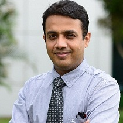
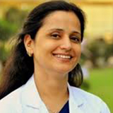
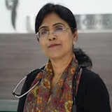
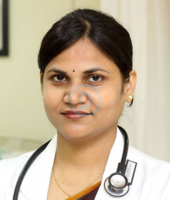
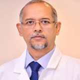
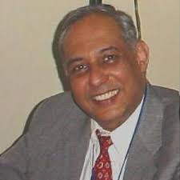

<app-home-navbar></app-home-navbar>
<div class="doctors">

      <main>
            

      </main>

      <aside>
            <h2>Dr. Gaurav Kharya</h2>
            <p>Senior Consultant , MBBS, DCH, DNB, Fellowship
            </p>
            <p>17 Years of Experience</p>
            <ul>
                  <li>Dr. Gaurav Kharya is a renowned onco-surgeon in Gurgaon.</li>

                  <li>He has an experience of more than 17 yearsand is skilled in transplanting children with various
                        blood disorders benign or malignant, immunological diseases etc. nationally and internationally.
                  </li>

                  <li>Dr. Kharya completed his MBBS from Netaji Subhash Chandra Bose Medical College, Jabalpur and DCH
                        from Baba Raghav Das Medical College, Gorakhpur. Following which he did his DNB (Paediatrics)
                        from the eminent Sir Ganga Ram Hospital, New Delhi.</li>

                  <li>He has worked as a fellow in pediatric hematoma-oncology, immunology & bone marrow transplant at
                        The Great north Children’s hospital, Newcastle upon Tyne,United Kingdom.</li>

                  <li>He has presented many papers in national and international conferences and has published many
                        papers in national and international journals.</li>
                  <li>Dr. Kharya is qualified for doing the first haploidentical bone marrow transplantfor sickle cell
                        disease in India.</li>
            </ul>

      </aside>

      <main>
            
      </main>
      <aside>
            <h2>Dr. Renu Raina Sehgal</h2>
            <p>Senior Consultant, MBBS, DNB</p>
            <p>16 years of experience</p>
            <ul>
                  <li>Dr. Renu Raina Sehgal is an obstetrician and gynaecologistwith 15+ years of extensive experience.
                  <li>Accomplished vaginal surgeon.
                  <li>Dr. Sehgal has expertise in Gynaecological Endoscopy, Infertility, Menopause, Advanced
                        Gynaecological Laparoscopy, Total Laparoscopic Hysterectomy, Operative Obstetrics, Primary
                        Abdominal Pregnancy and Endometriosis.</li>
                  <li>She has been awarded ‘Special Appreciation Award’ by Max Healthcare Limited and ‘Distinguished
                        Services Award’ by Delhi Medical Association (DMA).</li>

                  <li>She has completed her MBBS from Ravindra Nath Tagore Medical College, Udaipur; DNB (Obstetrics &
                        Gynaecology) Sir Ganga Ram Hospital, New Delhi and Fellowship program in Advanced Gynaecological
                        Endoscopy, Cochin.</li>
                  <li>She is a member of National Academy of Medical Sciences; Federation of Obstetric and
                        Gynaecological Societies of India (FOGSI); Association of Obstetricians and Gynaecologists of
                        Delhi (AOGD); Indian Fertility Society and Delhi medical Association.</li>
            </ul>
      </aside>

      <main>
            
      </main>
      <aside>
            <h2>Dr. Anjali Kumar</h2>
            <p>Head of Department , MD, MBBS
            </p>
            <p>23 years of experience</p>
            <ul>
                  <li>Dr. Anjali Kumar is a gynecological endoscopic surgeonwith 23+ years of experience.
                  </li>
                  <li>She has developed a technique known as “Reverse Uterine Closure technique” for suturing very thin
                        lower uterine segment and is accepted at Apex national Conference (AICOG) as Kumar’s Technique.
                  </li>
                  <li>She has been contributing to society through electronic and print media and has featured in
                        various talk shows by NDTV, Doordarshan, Khabrein Aaj Tak, etc.</li>
                  <li>Dr.Kumar has authored a book on pregnancy, ‘I am Blesssed’ and a small booklet on breastfeeding.
                  </li>
                  <li>She has successfully handled a lot of VBAC (Vaginal Births After Ccaesarean) cases.
                  </li>

            </ul>
      </aside>
      <main>
            
      </main>
      <aside>
            <h2>Dr. Soma Singh</h2>
            <p>Consultant , Fellowship, DNB, MS, MBBS
            </p>
            <p>11 Years of Experience
            </p>
            <ul>
                  <li>Dr. Soma Singh is an IVF & Infertility specialist with an experience of more than 11 years.
                  </li>
                  <li>She is a member of AOGD, ISAR, IFS and FOGSI.
                  </li>
                  <li>Dr. Singh has completed her MBBS, MS from SN Medical College and DNB from National Board of
                        Examination.</li>
                  <li>She has expertise in management of Male and Female infertility problems.
                  </li>
                  <li>She is one of few IVF specialists in India, who has experience of working in institute responsible
                        for birth of 1st two IVF babies in the world.</li>

            </ul>
      </aside>
      <main>
            
      </main>
      <aside>
            <h2>Dr Sanjay_Gagoi</h2>
            <p>Director , DNB, MCh, MS, MBBS
            </p>
            <p>18 Years of Experience
            </p>
            <ul>
                  <li>Dr. Sanjay Gogoi previously worked as a Doctor at Apollo Hospitals, Colombo, Sri Lanka.
                  </li>
                  <li>His specializations include Urology, Kidney Transplant, Reconstructive Urology, Pediatric Urology
                        and Urologic Oncology. </li>
                  <li>Dr Gogoi is a member of prestigious organizations like Urological Society of India (USI), American
                        Urological Association (AUA) and Indian Society of Organ Transplantation (ISOT). </li>

            </ul>
      </aside>
      <main>
            
      </main>
      <aside>
            <h2>Dr. Sanjay Sachdeva</h2>
            <p>Director , MBBS, DCH, MS

            </p>
            <p>29 years of experience
            </p>
            <ul>
                  <li>Dr. Sanjay Sachdeva is a renowned ENT Surgeon in India. ’ and a small booklet on breastfeeding.
                  </li>
                  <li>He has a thriving experience of over 26 +years.
                  </li>
                  <li>He has completed his MBBS,MS&DCH from the famous Maulana Azad Medical College.
                  </li>
                  <li>Dr. Sachdeva undertook training in Cochlear Implant Program At Nuclear Cochlear
                        Institution,Australia & Wurzburg ,Germany</li>
                  <li>He has successfully conducting a Live Surgery Workshop on Tracheal Stents in collaboration with the University Hospital, Ohio, United States</li>
                  <li>His area of expertise lies in Endoscopic Minimally Invasive Approach to Skull Base Surgery.
                  </li>
            </ul>
      </aside>

</div>